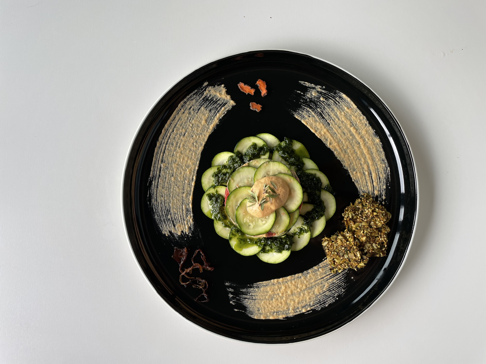
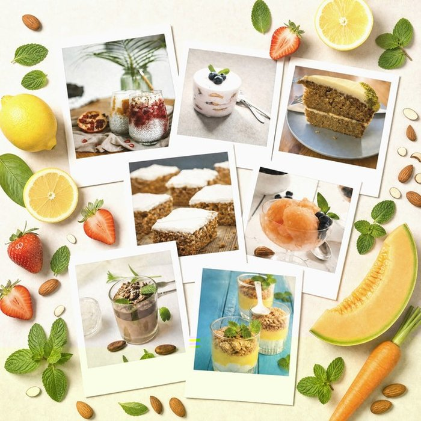

Alimentation vivante
La Cru'Sine comme art de vivre
Je t'accompagne vers une alimentation vivante, gourmande et créative pour retrouver vitalité, légèreté et plaisir dans chaque assiette.

Lasagne crue courgette & tomate · ail des ours · mayonnaise 100% raw
Ma démarche
Une transformation vécue de l'intérieur
De 20 années de végétarisme à la découverte de l'alimentation vivante
Depuis plus de vingt ans, le végétarisme fait partie intégrante de ma vie. Ce choix, guidé à la fois par mes convictions et par mon désir de prendre soin de ma santé, m'a permis de développer une relation plus consciente avec l'alimentation et avec le vivant.
Au fil des années, j'ai exploré différentes approches nutritionnelles, toujours avec la même intention : nourrir mon corps de la manière la plus naturelle et respectueuse possible.
Puis, il y a quelque temps, j'ai découvert l'alimentation crue vivante. Je ne m'attendais pas à ressentir des changements aussi rapidement.
Dès les premières semaines, j'ai observé une évolution remarquable de mon bien-être général : davantage d'énergie au quotidien, une sensation de légèreté physique, une meilleure clarté mentale, une digestion plus confortable et un sentiment profond de vitalité.
Cette expérience a été pour moi une véritable révélation. Après plus de vingt années d'alimentation végétarienne, je pensais déjà connaître les bienfaits d'une alimentation riche en végétaux. Pourtant, l'introduction d'une part importante d'aliments crus et vivants m'a permis de franchir une nouvelle étape dans mon équilibre personnel.

Mon approche
Une découverte qui a transformé mon quotidien
Ce qui me passionne aujourd'hui dans l'alimentation vivante, c'est sa capacité à allier santé, plaisir et créativité.
Contrairement aux idées reçues, manger cru ne signifie pas manger de façon monotone ou restrictive. Bien au contraire.
Chaque jour, je crée des recettes de crusine gourmandes, colorées et nutritives qui mettent en valeur toute la richesse des fruits, légumes, graines, oléagineux, jeunes pousses et aliments vivants.
Cette Cru'Sine est devenue pour moi un véritable espace d'expression et de création.
Pas de rupture brutale. Un accompagnement progressif, à ton rythme, qui respecte tes habitudes et tes contraintes de vie.
La crusine peut être délicieuse. Je te prouve chaque jour qu'alimentation vivante rime avec plaisir, couleurs et créativité.
Les enzymes vivants, la densité nutritive du cru — ressentir la différence dans son corps est la meilleure des motivations.
Inspirations
Fenouil finement émincé, macéré dans le tamari et le citron — fondant, umami et vivant.
Onctueux, riche en minéraux et iode naturel. Parfait sur les crackers maison ou avec des crudités colorées.
Fermenté naturellement, soyeux et légèrement acidulé. Accompagné de fruits de saison et d'un filet de miel cru.
Accompagnement
Un premier échange bienveillant pour comprendre où tu en es, identifier ce qui te freine et repartir avec quelques gestes simples à adopter dès le lendemain. La suite, on la construit ensemble.
Un accompagnement pensé entièrement pour toi : ton rythme, tes envies, ton point de départ. Pas de programme standard — on construit ensemble un chemin qui te ressemble, entre menus sur mesure, recettes adaptées à ta vie quotidienne, et un soutien présent aux moments où tu en as besoin.
Écris-moi pour qu'on en parle — on regardera ensemble ce qui te correspond.
En savoir plus →Un guide complet pour débuter la Cru'Sine en douceur : 7 jours de menus, recettes signatures, conseils de transition et liste de courses.
✦ Bientôt disponible
Des ateliers en petit groupe pour apprendre à Cru'Siner ensemble — chez moi en Pyrénées Orientales, chez toi, ou en visio selon tes besoins.
Questions fréquentes
Pas du tout. Que tu découvres la cuisine crue et vivante pour la première fois ou que tu pratiques déjà, chaque accompagnement s'adapte à ton niveau et à ton rythme. Je t'accueille là où tu en es, avec curiosité et sans jugement.
Les deux sont possibles. Je propose des séances en présentiel à 40 minutes de Perpignan et dans les environs, ainsi qu'en visio pour celles et ceux qui ne peuvent pas se déplacer. On en discute ensemble pour trouver la formule qui te convient.
Cela dépend de tes besoins et de tes objectifs. Une séance découverte dure généralement 1h à 1h30 et un accompagnement personnalisé peut s'étendre sur plusieurs semaines, selon ce que tu souhaites approfondir. On construit ensemble un parcours qui te ressemble.
Tu m'écris via le formulaire de contact en me disant simplement ce qui t'amène — une envie, une question, un besoin d'accompagnement. Je te réponds sous 48h pour qu'on échange ensemble, souvent autour d'un premier temps gratuit et sans engagement, histoire de voir si on a envie de faire un bout de chemin ensemble. Il n'y a rien à préparer, juste à te laisser guider par ta curiosité.
Témoignages
Contact
Une question, un doute, une envie de changer ? Écris-moi, je te réponds avec plaisir et sans pression. Chaque transition est unique, et la tienne mérite une attention particulière.
Tes données sont utilisées uniquement par La Cru'Sine de Nathalie pour t'envoyer l'ebook et, si tu l'acceptes, des nouvelles ponctuelles (recettes, ateliers, actualités). Elles ne sont jamais partagées ni revendues à des tiers. Tu peux te désinscrire à tout moment via le lien présent dans chaque email ou en écrivant directement à La Cru'Sine de Nathalie.
Je l'ai bien reçu et te répondrai avec plaisir
dans les 24 à 48 heures.
À très vite, Nathalie 🌸